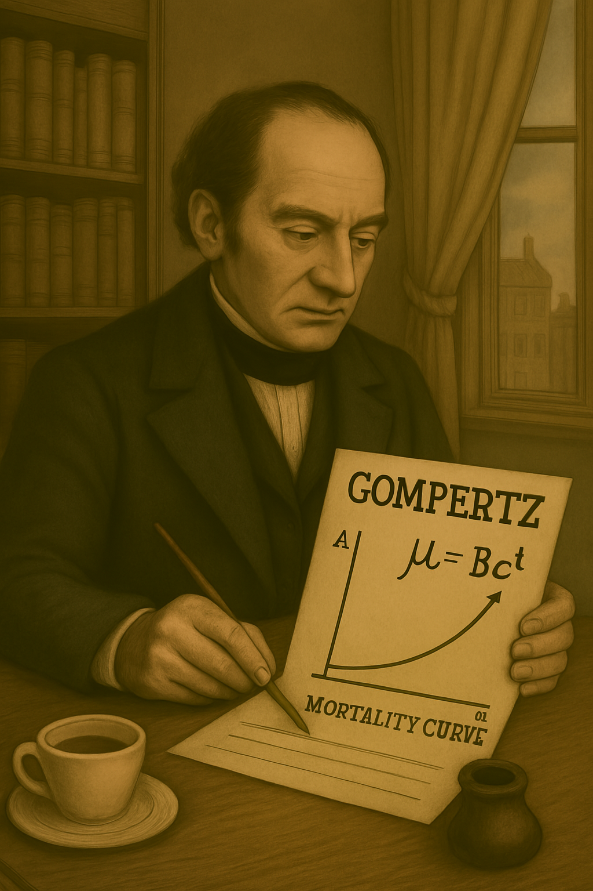
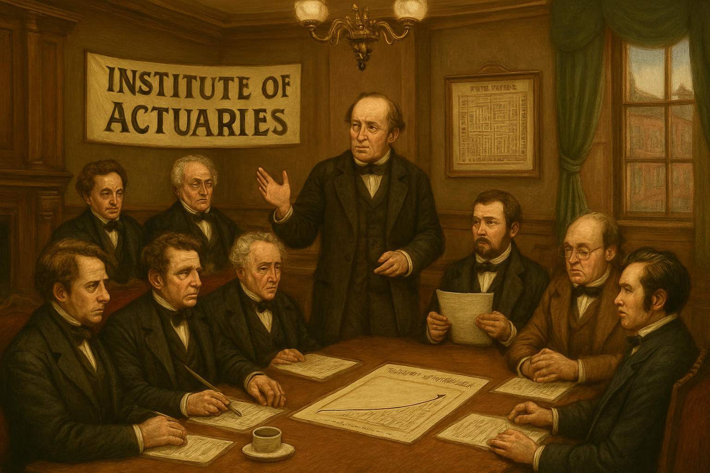

챕터 6: 19세기 – 전문화 시대
19세기는 산업 혁명으로 인구 이동과 위험 증가가 맞물린 시기입니다. 보험계리학이 전문 직업으로 자리 잡았으며, mortality modelling이 과학적으로 진보하였습니다. 영국과 미국 중심으로 기관 설립과 모델 개발이 핵심입니다.
The 19th century was a period intertwined with population movement and rising risks due to the Industrial Revolution. Actuarial science established itself as a professional field, with mortality modeling advancing scientifically. The establishment of institutions and model development, centered in Britain and the United States, were key.
Gompertz Law: 사망률 모델링(Gompertz Law: Mortality Modeling)
1825년 벤저민 곰퍼츠의 Gompertz Law는 사망률이 나이와 지수적으로 증가한다고 제안하였습니다. 이는 고령자 위험을 정확히 예측하는 모델로, 생명표의 핵심입니다. 이전 할리의 작업을 발전시켜 보험료를 정교화하였습니다.
In 1825, Benjamin Gompertz’s Gompertz Law proposed that mortality rates increase exponentially with age. This model accurately predicted risks for the elderly and became a cornerstone of life tables, refining premiums by building on Halley’s earlier work.
그림 6.1: Gompertz Law의 사망률 곡선, 1825
Institute of Actuaries: 전문 기관 설립(Institute of Actuaries: Establishment of a Professional Body)
1848년 Institute of Actuaries는 런던에서 설립된 세계 최초의 보험계리학 전문 기관입니다. 교육과 표준을 정하며, 보험 회사 운영의 과학적 기반을 강화하였습니다.
The Institute of Actuaries, founded in London in 1848, was the world’s first professional actuarial body. It set education standards and strengthened the scientific foundation for insurance company operations.
그림 6.2: Institute of Actuaries 설립, 1848
Faculty of Actuaries와 Makeham’s Law
1856년 Faculty of Actuaries는 에든버러에서 설립되어 지역적 전문화를 촉진하였습니다. 이 두 기관은 2010년 합쳐져 Institute and Faculty of Actuaries (IFoA)가 되었습니다.
1860년 윌리엄 메이컴의 Makeham’s Law는 Gompertz를 확장하여 우발적 사망을 추가하였습니다. 이는 mortality 예측을 더 정확하게 하여 보험료 계산을 정교화하였습니다.
The Faculty of Actuaries, established in Edinburgh in 1856, promoted regional specialization. These two bodies merged in 2010 to form the Institute and Faculty of Actuaries (IFoA).
In 1860, William Makeham’s Makeham’s Law extended Gompertz by incorporating accidental deaths, enhancing mortality predictions and refining premium calculations.
규제와 미국 확장(Regulation and Expansion in the United States)
1870년 Life Assurance Companies Act는 영국 의회가 제정한 법으로, 보험 회사의 재무 건전성을 규제하였습니다. 계리사들이 준비금을 계산하고 보고하도록 강제하여 산업 투명성을 높였습니다.
1889년 Actuarial Society of America는 미국에서 설립되어 영국 모델을 따랐으나, 대형 생명보험 회사(Mutual Life, New York Life)를 지원하였습니다.
The Life Assurance Companies Act of 1870, enacted by the British Parliament, regulated the financial soundness of insurance companies. It mandated actuaries to calculate and report reserves, enhancing industry transparency.
The Actuarial Society of America, founded in the United States in 1889, followed the British model but supported major life insurance companies like Mutual Life and New York Life.
이 시기의 공통 테마는 과학적 전문화와 규제입니다. 19세기 mortality tables 개선과 기관 설립으로 보험계리학이 직업화되었습니다.
The common theme of this period is scientific specialization and regulation. The improvement of 19th-century mortality tables and the establishment of institutions professionalized actuarial science.
요약 테이블(Summary)
| 연도 | 주요 제도/사건 | 설명 | 보험계리학과의 연관성 |
|---|---|---|---|
| 1825 | Gompertz Law | 사망률 지수 모델 개발, 고령자 예측 | 생명표 예측 정확도 향상, 보험료 정교화 |
| 1848 | Institute of Actuaries 설립 | 영국 최초 보험계리학 기관, 교육 표준화 | 교육과 표준화의 시작, 회사 운영 강화 |
| 1856 | Faculty of Actuaries 설립 | 스코틀랜드 보험계리학 기관, 지역 전문화 | 지역적 전문화 촉진, IFoA의 기반 |
| 1860 | Makeham’s Law | Gompertz 확장 모델, 우발 사망 포함 | 우발 사망 포함한 정교화, 예측 개선 |
| 1870 | Life Assurance Companies Act | 보험 규제 법안, 준비금 계산 의무 | 재무 안정성과 보고 의무, 사기 방지 |
| 1889 | Actuarial Society of America 설립 | 미국 보험계리학 기관, 영국 모델 채택 | 글로벌 확장과 산업 지원, 대형 회사 지원 |
출처(References)
- Gompertz, B. (1825). “On the Nature of the Function Expressive of the Law of Human Mortality.” Philosophical Transactions of the Royal Society.
- Haberman, S. (1995). “The History of Actuarial Science in the 19th Century.” History of Actuarial Science, Vol. 4.
- Makeham, W. (1860). “On the Law of Mortality.” Journal of the Institute of Actuaries.